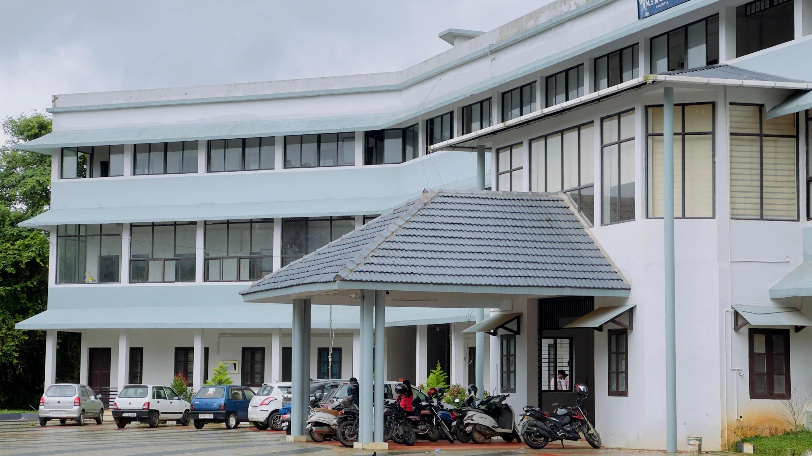
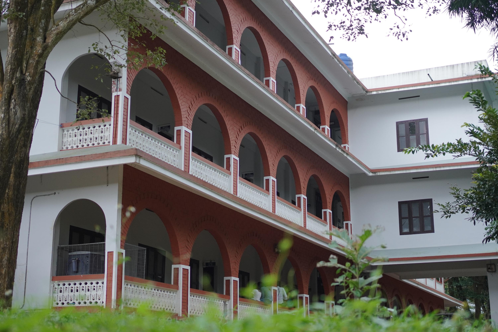

NMSM Government College, Kalpetta (Neelikkandy Moideen Sahib Memorial Government College) is one of the oldest and most prominent government colleges in Wayanad district, Kerala. Established in 1981, the college functions under the Government of Kerala and is affiliated with the University of Calicut. Nestled in the breathtakingly scenic hills of Puzhamudi, Vellaramkunnu, just 4 km from Kalpetta town, our green campus provides an idyllic and serene environment for intellectual pursuit and personal growth.
Over the past four decades, the college has transformed into a beacon of higher learning for students from diverse socio-economic backgrounds, particularly focusing on the educational upliftment of the marginalized communities in Wayanad. The college offers a diverse range of Undergraduate and Postgraduate programmes in disciplines spanning History, Economics, Commerce, Computer Science, Chemistry, and Journalism & Mass Communication.
With our highly qualified and experienced faculty members, modern smart-classrooms, well-equipped laboratories, a rich central library, and digital learning facilities, the institution is deeply committed to ensuring a high standard of academic excellence and continuous innovation.

NMSM Government College is more than just an academic institution; it is a vibrant community where students are encouraged to discover their passions and hone their talents. Accredited by NAAC, the college provides a holistic academic environment. We believe in education that extends beyond the four walls of a classroom.
Spread across a lush, eco-friendly campus, the institution actively promotes research, innovation, sports, and cultural activities. Our National Service Scheme (NSS) and National Cadet Corps (NCC) units are highly active, instilling a sense of discipline and social responsibility in our students. Various student-run clubs, including the Nature Club, Literature Club, and Debate Society, ensure that there is always an avenue for creative expression and skill development.
To be a premier institution of higher education that nurtures intellectual growth, fosters innovation, and empowers students—especially from marginalized communities—to become socially responsible, globally competent, and ethically grounded citizens.